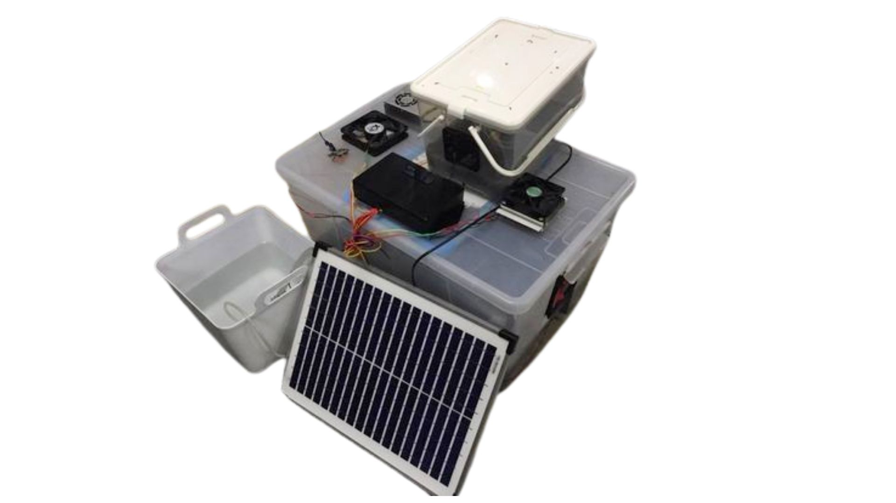
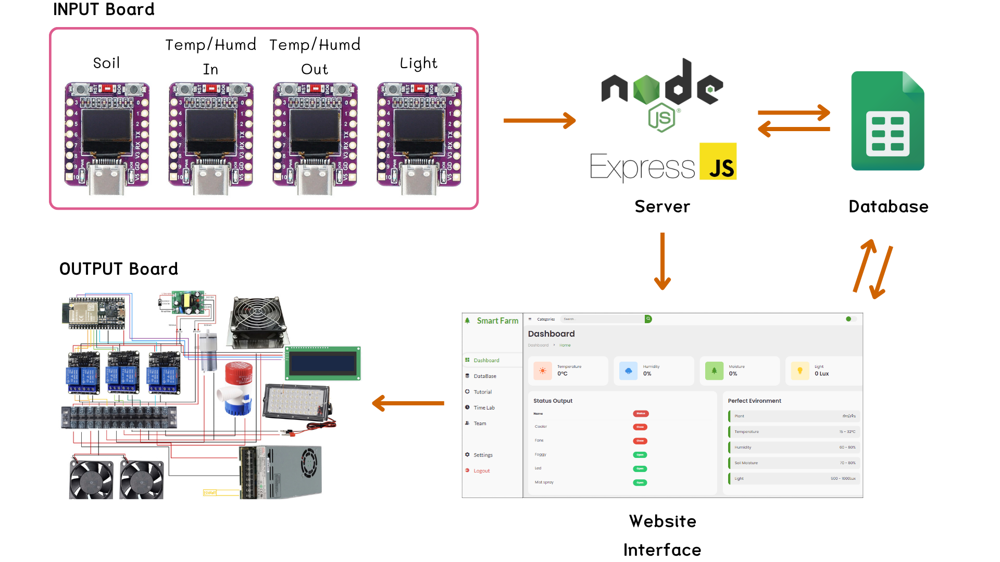

กล่องปลูกต้นไม้อัจฉริยะ
Smart planting box for limited spaces or crisis situations

รายละเอียดโครงงาน (Project Description)
ระบบควบคุมสภาพแวดล้อมสำหรับปลูกพืชในพื้นที่ขนาดเล็ก โดย ใช้บอร์ด ESP32 หลายตัวที่เชื่อมต่อผ่าน Server ซึ่งผมพัฒนาขึ้นเอง ระบบแบ่งเป็น 2 ส่วนหลัก ได้แก่ บอร์ดเซนเซอร์ สำหรับวัดอุณหภูมิ ความชื้น แสง และความชื้นในดิน และบอร์ดควบคุมอุปกรณ์ ที่สั่งงานพัดลม หลอดไฟ และปั๊มน้ำโดยอัตโนมัติตามข้อมูลจากเซนเซอร์ เพื่อรักษาสภาพแวดล้อมให้เหมาะสมกับการเจริญเติบโตของพืช
วีดิโอสาธิต (Video Demo)
เทคโนโลยีที่ใช้ (Technologies)
Poster & Results

ผลลัพธ์และการสาธิต (Results / Demo)
จากการทดลองพบว่าระบบนี้สามารถทำการรับส่งข้อมูลกันได้อย่างครบถ้วนตามที่เห็นดังภาพ WorkFlow Diagram นี้
